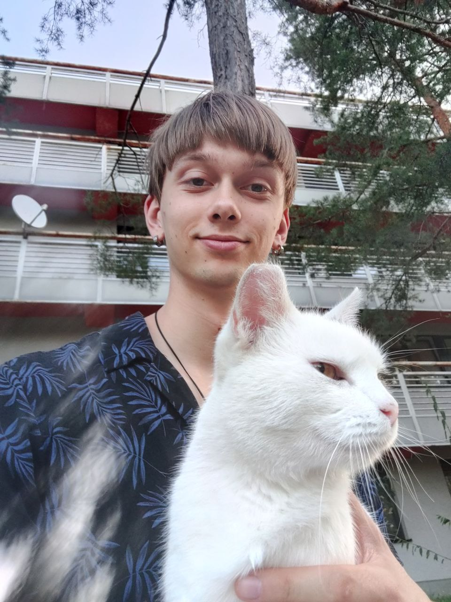

About Me
Narodil som sa v pulzujúcom meste Charkov na Ukrajine a volám sa Hlib Dorosh. Moja vzdelávacia cesta začala na škole č. 66 (2011 – 2020) a pokračovala na strednej škole KPKH, ktorú som ukončil v roku 2022. Vojnové udalosti ma zaviedli na Slovensko, kde teraz študujem na FEI STU a objavujem nové možnosti.
V rokoch 2012 až 2019 som sa intenzívne venoval plávaniu, no dnes ma lákajú horské chodníky a bežecké trasy. Moja túžba po objavovaní ma priviedla naprieč Ukrajinou a Európou—navštívil som mestá ako Kyjev, Odesa, Praha, Budapešť či Viedeň a prešiel som majestátne slovenské hory.
Žltá a biela sú farby, ktoré ma inšpirujú svojou jasnosťou a čistotou. Som nadšencom anime svetov ako JoJo's Bizarre Adventure, Naruto a One Piece, a energiu mi dodáva hudba Rammsteinu. Medzi ovocím u mňa víťazí exotická chuť mučenky.
Môj príbeh je o odvahe, dobrodružstve a neustálom hľadaní nových zážitkov—či už v štúdiu, cestovaní alebo v objavovaní kultúr, ktoré obohacujú môj život.
Momentálne sa zaujímam o nové technológie, ktoré nám umožňujú meniť svet. Moje štúdium na FEI STU mi poskytuje možnosť rozvíjať sa nielen v technických oblastiach, ale aj v oblasti medzinárodných vzťahov, pretože som nadviazal kontakty s rôznymi ľuďmi z celého sveta. Som presvedčený, že vzdelávanie je kľúčom k úspechu a vedomostiam, ktoré nám pomáhajú pochopiť svet.
Počas môjho voľného času rád cestujem a objavujem nové kultúry. Slovensko mi poskytlo množstvo príležitostí на спозnávanie krásnych miest a úžasných ľudí. Verím, že každá nová skúsenosť nás niečomu učí a posúva vpred.
Okrem technológií sa venujem aj športu, najmä futbalu, a vždy sa snažím nájsť rovnováhu medzi prácou, štúdiom a osobným životom. Budúcnosť vidím v technológiách, ktoré umožňujú ľuďom prekonávať vzdialenosti a spojiť svet.